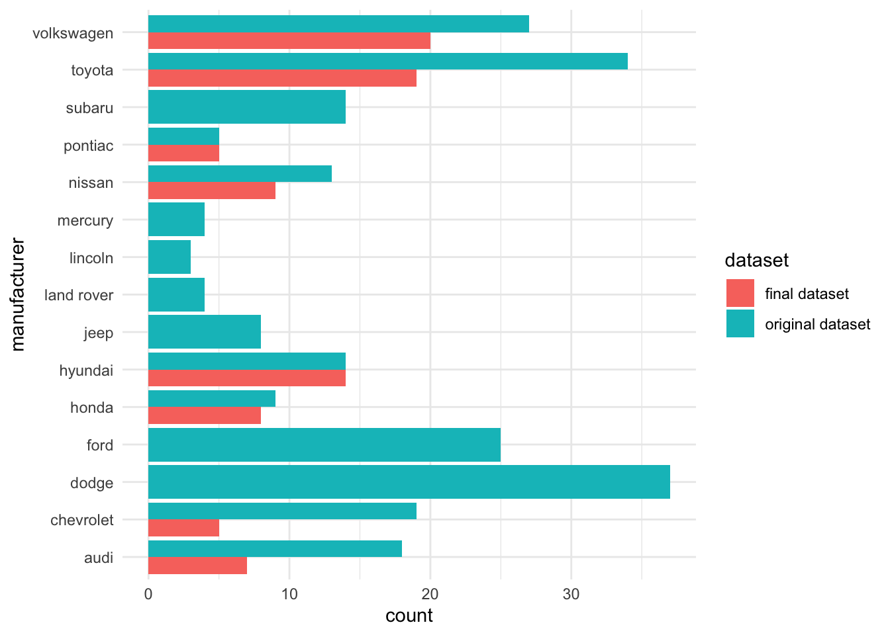
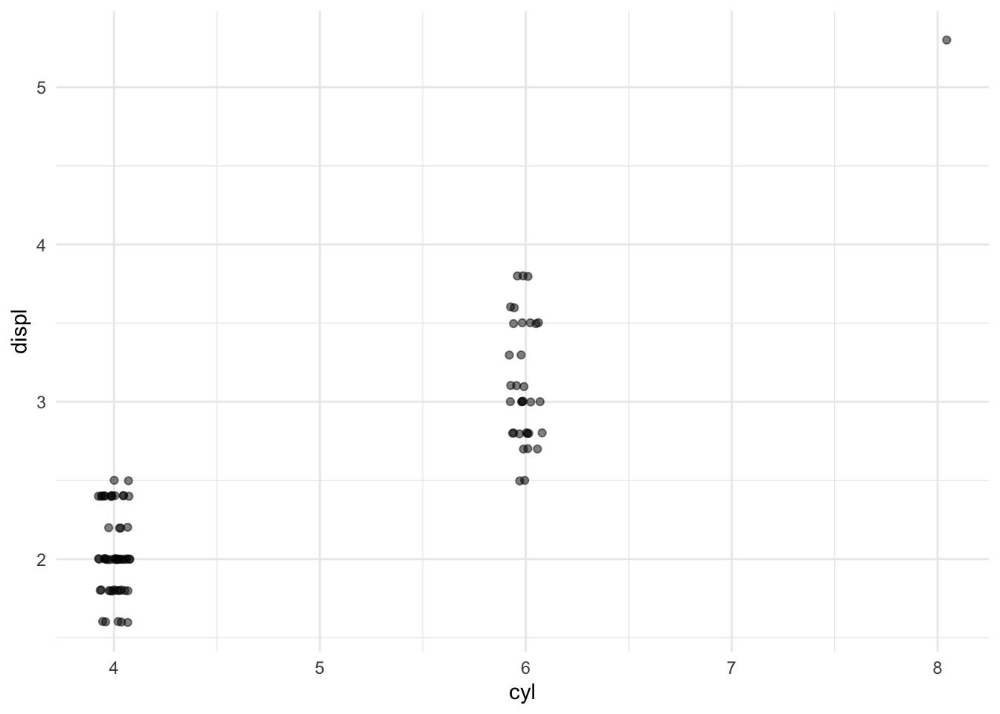
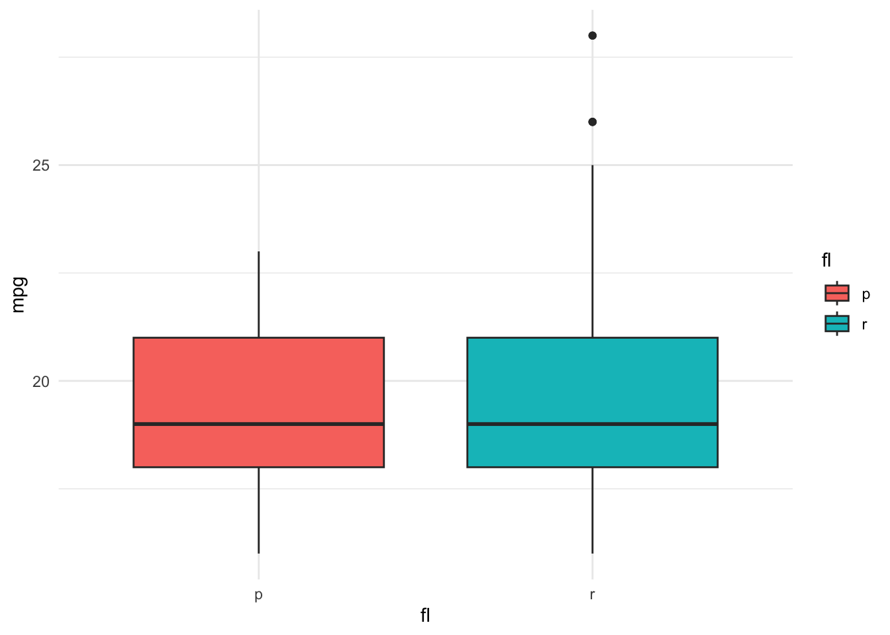
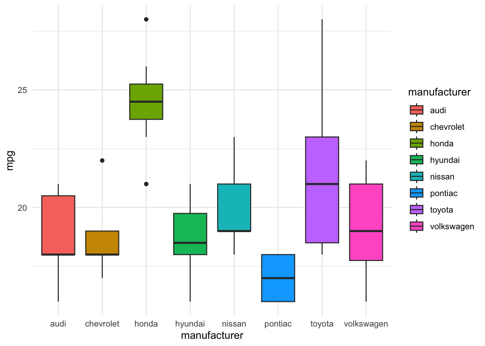
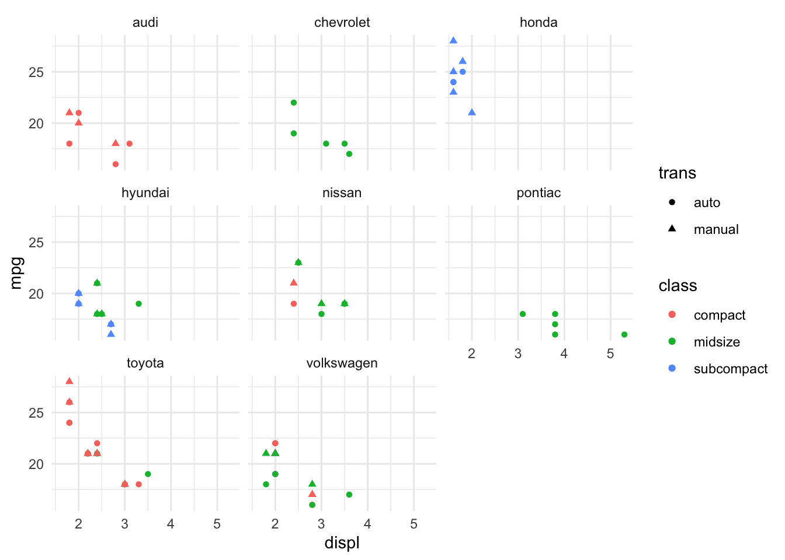
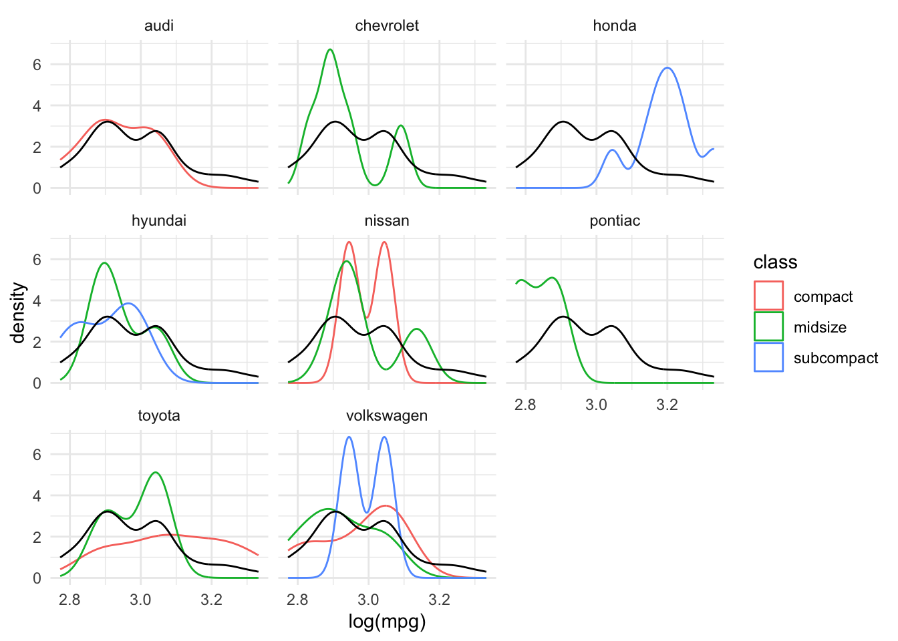
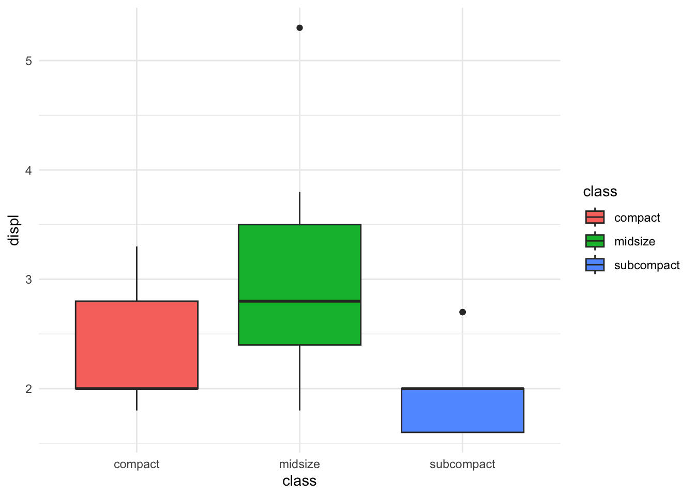
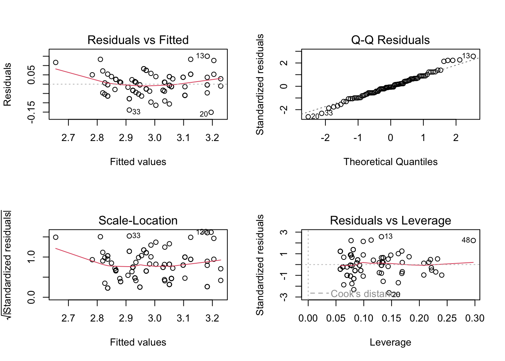
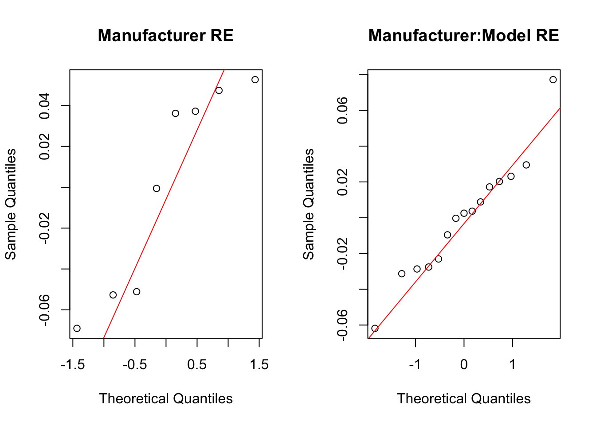

| manufacturer | model | displ | year | cyl | mpg | fl | class | trans |
|---|---|---|---|---|---|---|---|---|
| honda | civic | 1.6 | 1999 | 4 | 25 | r | subcompact | manual |
| hyundai | sonata | 2.4 | 2008 | 4 | 21 | r | midsize | auto |
| hyundai | tiburon | 2.7 | 2008 | 6 | 17 | r | subcompact | manual |
| nissan | altima | 3.5 | 2008 | 6 | 19 | p | midsize | manual |
| toyota | camry solara | 3.0 | 1999 | 6 | 18 | r | compact | auto |
| toyota | camry solara | 2.4 | 2008 | 4 | 22 | r | compact | auto |
| nissan | altima | 2.5 | 2008 | 4 | 23 | r | midsize | manual |
| chevrolet | malibu | 2.4 | 1999 | 4 | 19 | r | midsize | auto |
| hyundai | sonata | 3.3 | 2008 | 6 | 19 | r | midsize | auto |
| pontiac | grand prix | 3.8 | 2008 | 6 | 18 | r | midsize | auto |
Introduction
Fuel economy matters for consumers and environmental policy. We ask a focused question: after accounting for observable vehicle attributes, do manufacturers differ in typical city fuel economy?
Conceptually, we aim to separate manufacturer level differences from variation attributable to specific models. To that end, we compare manufacturers while adjusting for key covariates and explicitly distinguish manufacturers from model level effects so that inferences about brands are not confounded by the mix of models.
The sections that follow describe the data and filtering choices, explore salient patterns, and then fit benchmark and hierarchical models with accompanying diagnostics, before concluding with implications and limitations.
Data
The data come from the mpg dataset (GGplot2 Development Team, n.d.). We focus on front‑wheel‑drive petrol cars in the compact, midsize, and subcompact classes to keep the comparison balanced. Because models were selected based on having new releases across 1999–2008 (used as a proxy for popularity), manufacturers appear in the sample according to availability rather than a strict experimental design. This affects whether manufacturers are best treated as random or fixed effects.
On one hand, manufacturers could be treated as random effects because they were not experimentally selected; on the other hand, we are interested in manufacturer‑specific differences, so treating manufacturers as fixed effects would be useful if each manufacturer is well represented. After filtering the data some manufacturers are missing or sparsely represented, so the scope of inference is limited — we can test whether manufacturers differ, but precise fixed‑effect estimates for every manufacturer would be unreliable.
Models are treated as random and are nested inside manufacturers because the sample contains multiple models per manufacturer and the particular models present are effectively a random sample from all possible models.
Because of the way the data is collected, (selection of models which had a new release every year between 1999 and 2008 - this was used as a proxy for the popularity of the car), we need to be careful about how manufacturers are treated in the analysis. On one hand it seems only fair to treat manufacturers as also being random, since these were not specifically selected in the design of experiment (like car model these appear randomly in the data based on popularity criteria) (Faraway 2016). On the other hand, we are interested in the actual differences between manufacturers, so treating them as fixed effects is desirable.
However, to warrant the use of fixed effects for manufacturers, we need to have sufficient data for each manufacturer and post filtering, the data should have all the manufacturers of interest. As can be seen this is not the case.

It can be seen that several key manufacturers are missing from the final dataset, consequently we may only be able to answer question like Is the mpg among manufacturers significantly different ? as opposed to What is the average mpg of manufactuers to be able to compare them more directly
Of course, the car models are random in the study design, so we will treat them as such. Although these are nested inside manufacturers.
EDA
Data summary is as follows -
| total_rows | total_manufacturers | total_models | min_mpg | max_mpg | mean_mpg | total_years |
|---|---|---|---|---|---|---|
| 87 | 8 | 15 | 16 | 28 | 20 | 2 |
| manufacturer | model | counts | mean_mpg |
|---|---|---|---|
| audi | a4 | 7 | 18.9 |
| chevrolet | malibu | 5 | 18.8 |
| honda | civic | 8 | 24.5 |
| hyundai | sonata | 7 | 19.0 |
| hyundai | tiburon | 7 | 18.3 |
| nissan | altima | 6 | 20.7 |
| nissan | maxima | 3 | 18.7 |
| pontiac | grand prix | 5 | 17.0 |
| toyota | camry | 7 | 19.9 |
| toyota | camry solara | 7 | 19.9 |
| toyota | corolla | 5 | 25.6 |
| volkswagen | gti | 5 | 20.0 |
| volkswagen | jetta | 6 | 19.3 |
| volkswagen | new beetle | 2 | 20.0 |
| volkswagen | passat | 7 | 18.6 |
There are (exactly) two years of data covering 15 models. We treat year as a categorical variable rather than continuous. A short sample for one model is shown below.
| manufacturer | model | displ | year | cyl | mpg | fl | class | trans |
|---|---|---|---|---|---|---|---|---|
| audi | a4 | 1.8 | 1999 | 4 | 18 | p | compact | auto |
| audi | a4 | 1.8 | 1999 | 4 | 21 | p | compact | manual |
| audi | a4 | 2.8 | 1999 | 6 | 16 | p | compact | auto |
| audi | a4 | 2.8 | 1999 | 6 | 18 | p | compact | manual |
| audi | a4 | 2.0 | 2008 | 4 | 20 | p | compact | manual |
| audi | a4 | 2.0 | 2008 | 4 | 21 | p | compact | auto |
| audi | a4 | 3.1 | 2008 | 6 | 18 | p | compact | auto |
We observe multiple rows per model/year because of different displacements and transmission types. The data only contain three distinct cylinder sizes (4, 6, 8), which is captured by displacement, so we remove cyl to simplify the analysis.

Fuel type (regular vs premium) is not central to this study and shows little correlation with city mpg, so we drop the fuel type column as well.

We visualize how mpg varies across manufacturers and by other attributes to get an initial sense of the patterns.

There does seem to be quite a lot variability in the city mpg among manufacturers.
Although, it is definitely possible that this is driven by different models and their attributes more than manufacturers themselves.
The plot below suggests (to intuition) that with larger displacement the mpg reduces. Although there is a hint of nonlinearity in the trend, we shall ignore this initially.
Midsize cars are slightly less efficient (lower mpg) than compact and subcompact cars. This is expected since these are heavier with higher displacement engines.
It is hard to get an accurate read on the effect of transmission and so we shall defer it to the model to figure out.

The mpg distribution has a right skew, so we take the logarithm of mpg to stabilize variance and to make regression coefficients interpretable as approximate percentage changes.

Analysis
Baseline model
We start with a simple linear model that includes manufacturer as a fixed effect along with displacement and year. This fixed‑effects model provides a baseline and helps identify which predictors explain the most variation in log(mpg). Transmission and class become less important after accounting for displacement and manufacturer, so we simplify the model accordingly.
Analysis of Variance Table
Response: log(mpg)
Df Sum Sq Mean Sq F value Pr(>F)
manufacturer 7 0.66676 0.09525 25.9752 < 2.2e-16 ***
displ 1 0.43577 0.43577 118.8345 < 2.2e-16 ***
class 2 0.01534 0.00767 2.0922 0.1307
trans 1 0.00590 0.00590 1.6102 0.2084
year 1 0.13722 0.13722 37.4189 4.133e-08 ***
Residuals 74 0.27136 0.00367
---
Signif. codes: 0 '***' 0.001 '**' 0.01 '*' 0.05 '.' 0.1 ' ' 1It can be seen that manufacturer and displ are highly significant predictors of log(mpg). As seen in the plot earlier, 1L increase in displacement can reduce MPG by ~15% ()
Transmission is not significant in the presence of other predictors as was the observation from plot earlier.
Class is not significant either, although this may be due to confounding with displacement as suspected before. A formal test of displacement being positively related with class for any given model also validates this finding.

Analysis of Variance Table
Response: displ
Df Sum Sq Mean Sq F value Pr(>F)
class 2 11.759 5.8796 27.0251 1.876e-09 ***
model 13 12.390 0.9531 4.3807 2.222e-05 ***
Residuals 71 15.447 0.2176
---
Signif. codes: 0 '***' 0.001 '**' 0.01 '*' 0.05 '.' 0.1 ' ' 1Consequently we can simplify the model by removing trans and class, which results in a decent fit to the data and diagnostics are satisfactory.

Mixed effects model
Because models are nested within manufacturers and the specific models in the data are essentially a random sample, we fit mixed‑effects models that include random intercepts for manufacturer and for model nested within manufacturer. This accounts for the correlation between observations from the same model and between models from the same manufacturer.
Fixed Effects:
coef.est coef.se
(Intercept) 3.33 0.04
displ -0.15 0.01
year2008 0.08 0.01
Random Effects:
Groups Name Std.Dev.
manufacturer:model (Intercept) 0.05
manufacturer (Intercept) 0.06
Residual 0.05
---
number of obs: 87, groups: manufacturer:model, 15; manufacturer, 8
AIC = -199.6, DIC = -250.4
deviance = -231.0 It can be seen that variance due to manufacturer and models nested inside manufacturer are comparable in magnitudes. The variation in mpg is due to both which is sesnible outcome.
It can be tested if including model effects is meaningful using a likelihood ratio test. (Scheipl, Greven, and Kuechenhoff 2008)
simulated finite sample distribution of RLRT.
(p-value based on 10000 simulated values)
data:
RLRT = 13.167, p-value < 2.2e-16So we reject the hypothesis that manufacturer:model nesting effect is not significant.
Additionally we can check confidence intervals for variance components. Manufacturer variance intervals do not contain 0.
Computing bootstrap confidence intervals ...
105 message(s): boundary (singular) fit: see help('isSingular')
1 warning(s): Model failed to converge with max|grad| = 0.0036062 (tol = 0.002, component 1)| 2.5 % | 97.5 % | |
|---|---|---|
| .sig01 | 0.0057855 | 0.0733163 |
| .sig02 | 0.0000000 | 0.1040288 |
| .sigma | 0.0448014 | 0.0626391 |
| (Intercept) | 3.2504237 | 3.4155443 |
| displ | -0.1758906 | -0.1248191 |
| year2008 | 0.0584266 | 0.1074370 |
Diagnostics
Residual diagnostics suggest approximate normality and roughly constant variance. Random‑effect Q–Q plots indicate the manufacturer:model random effects are reasonably close to normal; manufacturer effects are also approximately normal.

We can also check assumption of normality of random effects. Which holds up reasonably well (particularly for manufacturer:model).

Conclusion
We set out to test whether manufacturers differ in city mpg after controlling for other attributes. Accounting for model‑level clustering, year and displacement, we find remaining manufacturer‑level variation in city mpg. In other words, even after controlling for model and engine size, manufacturers differ in typical city mpg.
The variability among manufacturers is of the order of +/- 6%, which translates to +/-1.2 mpg on average
Limitations: this analysis is limited to petrol, front‑wheel‑drive cars in the compact/midsize/subcompact classes. Results should not be generalized beyond these groups without further study. Results are also sensitive to the treatment of manufacturers as random effects due to the sampling design.
References
Faraway, Julian J. 2016. Extending the Linear Model with r, Second Edition. CRC Press.
GGplot2 Development Team. n.d. “The r Project for Statistical Computing.” https://ggplot2.tidyverse.org/reference/mpg.html.
Scheipl, Fabian, Sonja Greven, and Helmut Kuechenhoff. 2008. “Size and Power of Tests for a Zero Random Effect Variance or Polynomial Regression in Additive and Linear Mixed Models.” Computational Statistics & Data Analysis 52 (7): 3283–99.